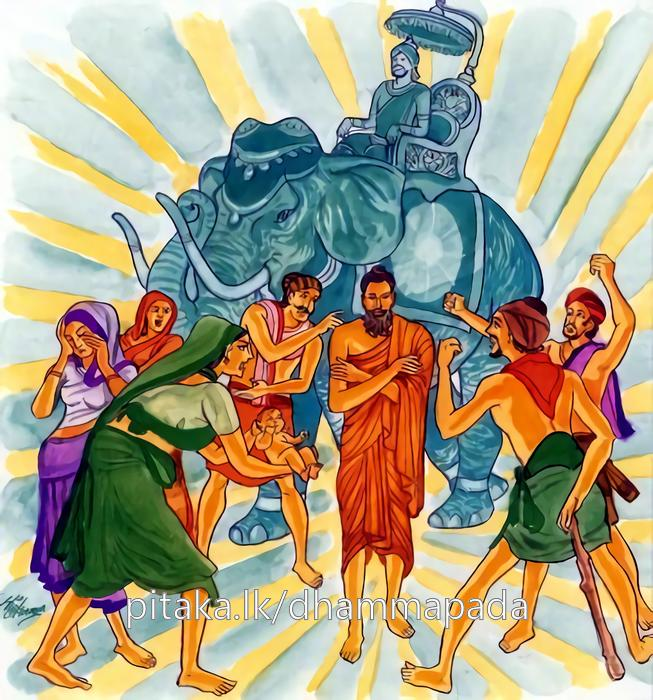
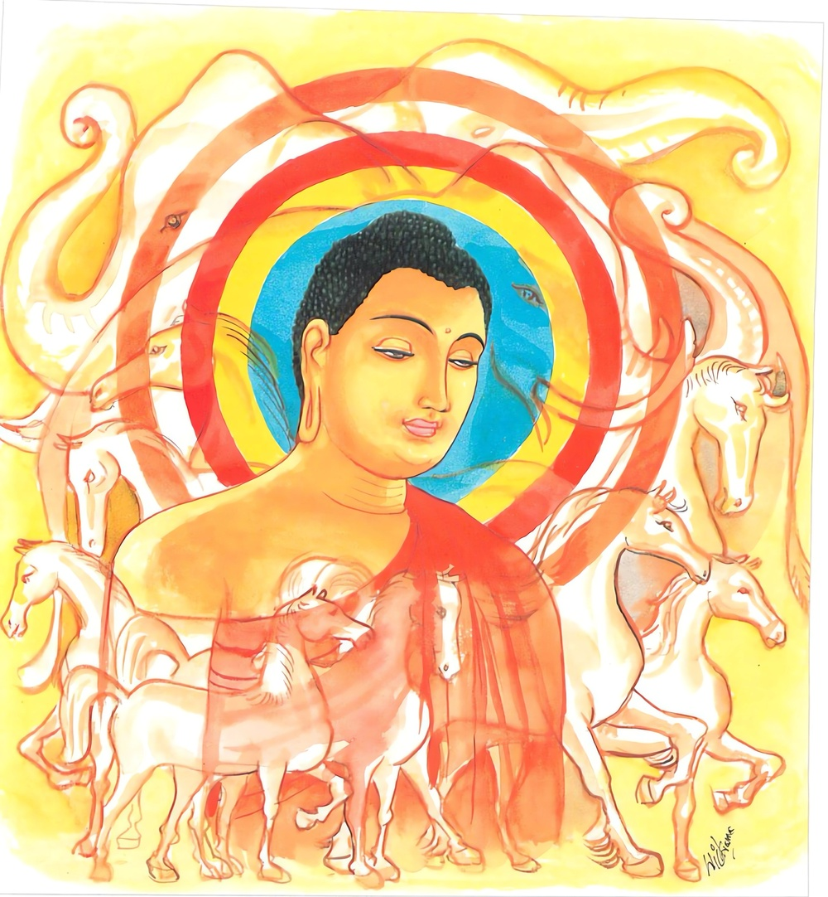

23-1 තමන් නිමිති කරගෙන කියන ලද කථා පුවත
මෙම කතාව සද්ධර්ම සාගරයෙන් ද කියවන්න.
අහං නාගො’ව සඞ්ගාමෙ චාපතො පතිතං සරං.
අතිවාක්යං තිතික්ඛිස්සං දුස්සීලො හි බහුජ්ජනො.
යම් හෙයකින් ලෞකික මහ ජන තෙම ශීලසංවරයෙන් විනිර්මුක්ත ද එ හෙයින් දුන්නෙන් ගිලිහී තමන් වෙරැ හුණු ශරප්රහාරයන් ඉවසන ඇතකු මෙන් මම් (මෙරමාගේ) රළු බස් ඉවසමි.
දන්තං නයන්ති සමිතිං දන්තං රාජා’භිරූහති
දන්තො සෙට්ඨො මනුස්සෙසු යො’තිවාක්යං තිතික්ඛති.
බොහෝ දෙනා රැස් වන තැනකට දැමුනු සතකු පමුණුවත්, රජ ද දැමුනු ඇතකු හෝ අසකු පිට නගී. යමෙක් රළු බස් ඉවසා ද හෙ තෙම සිවු අරියමගින් දාන්ත වූයේ මිනිසුන් අතුරෙහි උතුම් වෙයි.

වරමස්සතරා දන්තා ආජානීයා ච සින්ධවා
කුඤ්ජරා ච මහානාගා අත්තදන්තො තතො වරං.
අශ්වතරයෝ ද දැමුනාහු මැ උතුම් වෙත්. අජානේය නම් අශ්වයෝ ද දැමුනාහු උතුම් වෙත්. සෛන්ධව අශ්වයෝ ද දැමුනාහු මැ උතුම් වෙත්. ඇත්තු ද දැමුනාහු මැ උතුම් වෙත්. ඔවුන් හැම දෙනාට වඩා තමා දමනය කරණ ලද්දේ උතුම් වෙයි.

"අහං නාගො වාති” යන මේ ධර්ම දේශනය ශාස්තෲන් වහන්සේ කොසබෑ නුවර වැඩ සිටියදී තමන් අරමුණු කොට දේශනා කළහ.
කථා පුවත අප්පමාද වර්ගයේ මුල් ගාථා වර්ණනයේ විස්තර කළ පරිදි කියන ලදී. එහි මාගන්දිය කිසිවක් කිරීමට තමන් අසමත් වූ භවත් ගෞතමයන්ට කළයුතු දේ කරමියි නාගරිකයන්ට අල්ලස් දී භවත් ගෞතමයන් ඇතුළු පිරිස නුවරට පිවිස හැසිරෙන විටදී ආක්රෝෂකොට පරිභව කොට බැන පළවා හරිනැයි දැසි දස් කම්කරු පිරිසට අණකළාය. මිත්යා දෘෂ්ටිකයෝ රත්නත්රයේ නොපැහැදී, ඇතුළු නගරයට පිවිසි බුදුන් ලුහුබැඳ සොරෙකි, බාලයෙකි, මුළාවුවෙකි වංචාකරුවෙකි ඔටුවෙකි. ගොණෙකි, කොටළු වෙයි. නිරිසතෙකි, තිරිසනෙකි ඔබට සුගතියක් නැත. දුගතියම බලාපොරොත්තු වන්නැයි දස ආක්රෝෂ වස්තූන්ගෙන් නින්දා බස් කියති. මෙසේ පරිභව කරණු අසා ආයුෂ්මත් ආනන්ද තෙරුන් බුදුන්ට මෙසේ කීවේය. ස්වාමීනි මේ නගර වැසියෝ අපට ආක්රෝෂ පරිභව කරති. මෙයින් වෙනත් තැනකට යමුයි. කියා පැවසුහ. ආනන්ද කොහි යන්නද? ස්වාමීනි අනෙක් නගරයකට යමු. එහි මිනිසුනුත් මෙසේ ආක්රෝෂ කරනවිට කොහි යමුද? එයිනුත් අනෙක් නගරයකට යි පැවසුහ. ආනන්ද මෙලෙස කිරිම නොවටී. යම් තැනක අධිකරනයක් උපදීද, එයට මුහුණදී එය සංසිඳුන පසු අතැනකට යාම වටී. ආනන්ද මේ ආක්රෝෂ කරන්නේ කවුරුන්ද? දාස - කම්කරුවෝ සියල්ලේම ආක්රෝෂ කරතියි - පැවසුහ. ආනන්ද යුද්ධයකට ගිය ඇතා සතර දිශාවෙන් එන ඊ පහර ඉවසීම වගකීමයි. එසේම බොහෝ දුසීලයන් විසින් කියන කථා ඉවසීම සවන්දීම එය මගේ වගකීමයි. පවසා තමන් ආරම්භ කොට ධර්මය දේශනා කරන්නේ. මේ ගාථාව දේශනා කළහ.
සතර පැතෙන් එන
හීසර පහර ඉවසන
ඇතෙකු මෙන් යුදට ගිය
දුදනනගෙ දුසිලුන්ගේ
පරුස බස් විඳගනිමි
දැමුණු මහ ඇතෙකුසේ
යුදබිමේදී හතර දිගින් වැදෙන හී පහර ඉවසන ඇතෙකු මෙන්, මම ද දුසිලුන් විසින්, අනුන් විසින් කියන ඵරුෂ වචන ඉවසමි.
බොහෝ දෙනා රැස්වන තැනට දමනය වු ඇතෙකුම ගෙනයයි. රජු ද දමනය වු ඇතෙකු පිටම නගී. ඔවුනොවුන් විසින් කියනු ලබන ඵරුෂ වචන ඉවසන මනාව හික්මුණු තැනැත්තාම මිනිසුන් අතර ශ්රේෂ්ඨය.
දැඩී වෛර ඇති අශ්වයෝ ද ආජානීය හා සෛන්ධව අශ්වයෝද, මහානාග නම් ඇත්තු ද, දමනය වූ විටම උතුම්ය, ඒ සැමටම වඩා තමා දමනය කිරීම උතුම් වේ.
එහි නාගොවාති - ඇතකු මෙන් චාපාතො පතිතනති දුන්නෙත් මිදුනු අතිවාක්යං - අට අනාර්ය ව්යවහාර ලෙස පවතින ක්රම වචනය ඉක්මවීමේ වචනය, තිතබ්බිස්සං යම්සේ යුද්ධයට සුදුසු වු දැමුනු මහා ඇතා හී සර විත් වැදුනවිට වේදනාවුයේද ඉවසයි. මෙසේම නින්දාබස් ඉවසයි යන අර්ථයි. දුසීලො ලෞකික මහජනයා බොහෝ දෙන දුස්සීලය - තම තමන්ට රුචිලෙස වචන කියති ගැටෙමින් හැසිරෙති. මධ්යස්ථව සිට බලමින් එය ඉවසීම මගේ වගකීමයි. මට බාරයි සමිතිං උද්යාන ක්රීඩා මණ්ඩල ආදියෙහි මහජනයා මැදට යන්නේ දැමුනාවුම ගොනුන් අසුන් යානයෙහි යොදාගෙනම රාජා රජුද එලෙසට සතුන් පිට යන්නේ දැමුනු සතෙකු පිට ම යයි. මනුසෙස්සයුති - මිනිසුන් අතරද චතුරාර්ය මාර්ග යෙහි දැමුනු තැනැත්තාම ශ්රේෂ්ඨවේ. යොතිවාක්යං තිතික්ඛති - යම් කෙනෙක් මෙබඳුවු ශීලාචාරය ඉක්මවන වචන නැවත නැවත කියන්නේද ඉවසයි ද නොසැලේ ද වෙහෙසට පත්නොවේ ද මෙබඳු දැමුන තැනැත්තා ශ්රේෂ්ඨවේ. යන අර්ථයි.
අස්සතරාති කොටළුවෙකු නිසා වෙළඹගෙන් බිහි වූ ආජානීයෙයාති - ආජානීය නම් අසුන් හික්මවන ආචාර්යවරයා යමක් සිතයිද කියයිද වහාම එය දැන ගැනීමෙහි සමත් තැනැත්තායි. සිද්ධවාති - සින්ධව රට උපන් අශ්වයෝයි. මහානාති - කුඤ්ජර සංඛ්යාත මහා ඇත්තුය. අත්ත දන්තොති - මේ අසුන් දැමුනෝද එසේම යම් කෙනෙක් සිව් අරිය මගෙහි යෙදී තමා තමන් දමනය කරන්නේ නම් මෙතෙමේ ශාන්ත වු සුසීල වූ අයෙක් වේ. එහෙයින් ඔහු අනෙක් සියල්ලන් අතුරෙන් උත්තරීතර වේ යන අර්ථයි. දේශනාවසානයේ අල්ලස් ගෙන වීථි සන්ධිවල සිට නින්දා කළ සියලු ඒ මහජනයා සෝවාන් ඵලයට පැමිණියෝය යන අර්ථයි.